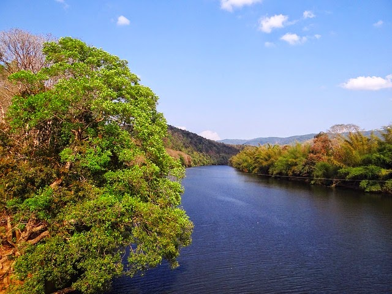

Save The Water

Since I founded One Drop in 2007 , I have dreamed of a world where everyone would have access to safe water.Millions of people share this dream , and each with their own means contribute energy, knowledge, and crucial funds. As a result, although there's still tremendous work to be done, the situation has improved. Now more than ever, let's continue and even scale our efforts until we reach our common goal. Together, let's make the world a better place.
Some Facts and Figures About Water Use
1. Water covers 70.9 percent of the planet's surface.
2. Around the world, 2.1billion people still lack access to safe water.
3. 97per cent of the that water is salt water.
4. It requires around 1500 litres of water to produce 1 kilogram of wheat, and a huge 10 times more to produce the same amount of beef.
SAVE WATER

No water , No blue , no green .
Yes, that's right. Everything,everyone in fact the whole world cannot survive without water. Plants need water , animals need water, human beings need water to live and survive. Water is the most important resource of nature that is required to ensure our survival. Life can not exist without water.
The Water saving tips
1. Use a bowl in the sink when washing fruit, vegetables of dishes. You can then use the waste water to water your plants.
2. Wash the car with water from a bucket, or consider using a commercial car wash that recycles water.
3. When using a hose, control the flow with an automatic shut-off nozzle.
4. Do not use water to defrost frozen foods, thaw in the refrigerator overnight.